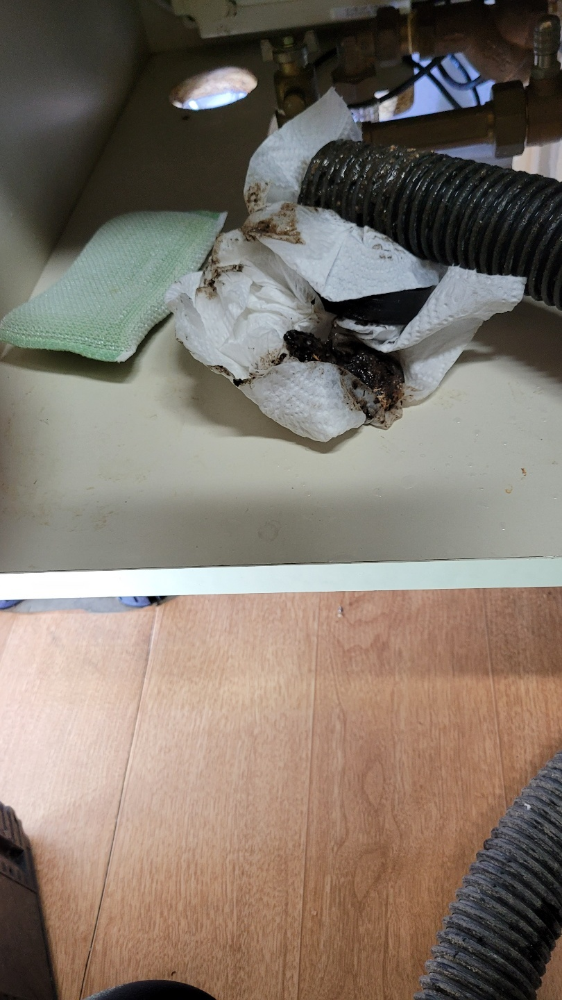
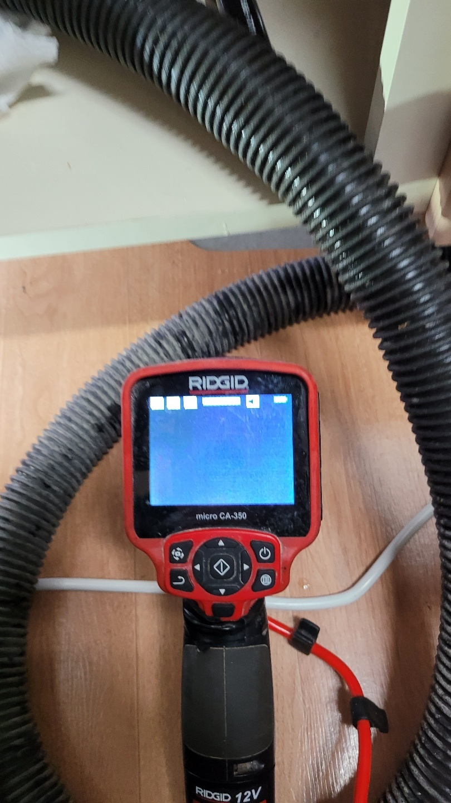
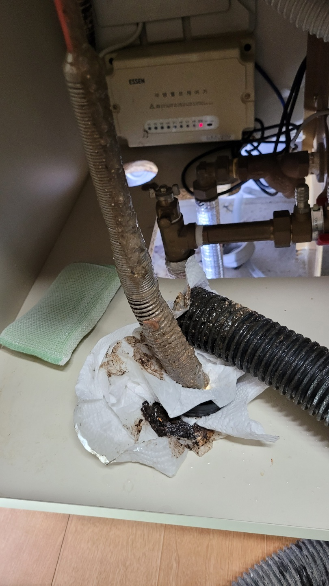
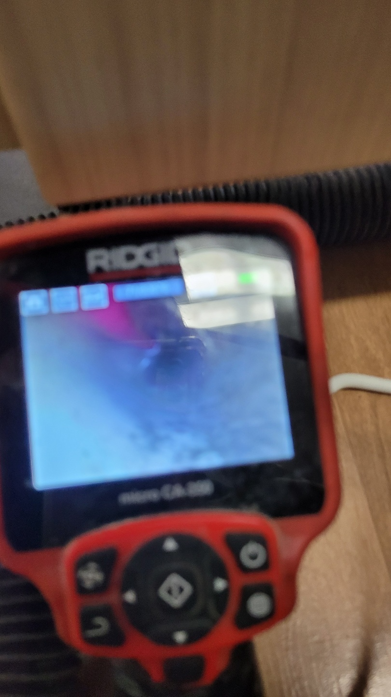
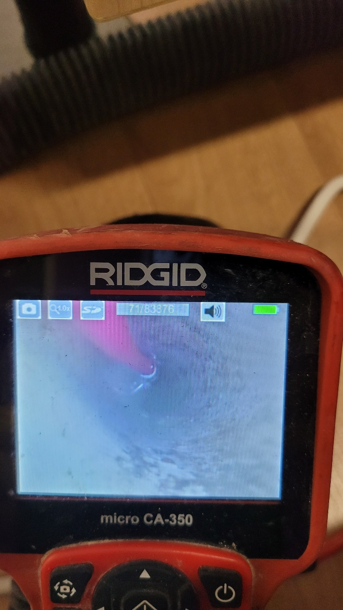
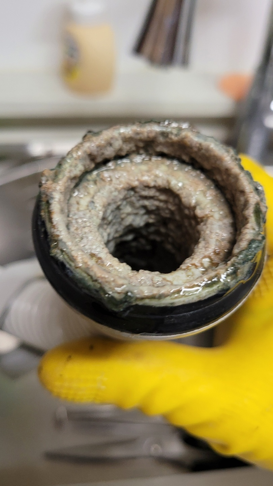

🏠 평택 송탄싱크대막힘 이충동 지산동 하수구뚫었어요. 후기 들려드립니다!
평택 싱크대막힘 전문 시공 후기

📋 작업 개요
- 위치: 평택
- 서비스 유형: 싱크대막힘, 하수구막힘, 배관막힘, 역류해결, 뚫는업체, 배관청소, 고압세척
- 작업 일시: 2022. 10. 7. 18:31
- 업체명: 하수구수사대 (010-5615-2118)
🔍 문제 상황
안녕하세요. 하수구수사대입니다.
오늘도 저희를 찾아주시는 고객님들의 요청에 쉴 새 없이 바쁜 하루를 보내고 돌아왔습니다. 싱크대 막힘 현상으로 인해 불편함을 호소하시는 분들을 위해 해당 장소로 출동해 평택 송탄싱크대막힘 이충동 지산동 하수구뚫었어요. 그럼 다같이 그 후기를 살펴보도록 하겠습니다.
평택 송탄싱크대막힘 이충동 지산동 하수구뚫었어요.
이번에 저희 하수구수사대를 찾아주신 곳은 가족들이 함께 생활하고 있는 가정집이었습니다. 어느날 부턴가 물이 평소와 다르게 느리게 배수가 되는 것이 느껴졌지만 별문제 없겠지 생각을 하시며 하루하루를 보내셨다고 해요. 하지만 그 현상이 점점 심해지면서 악취도 계속해서 발생되고 있고 결국에는 아주 조금이지만 역류까지 시작되고 있었습니다.
무려 다섯 식구가 함께 생활을 하다보니 물을 사용하는 양이나 설거지 양이 비교적 많아 싱크대가 막히니 너무 불편해하시더라고요. 이런 경우는 처음이라 재빨리 이곳저곳 업체를 찾아보던 중 평소 친하게 지내던 옆집 이웃의 소개로 저희 하수구수사대를 찾아주셨습니다.

🔎 원인 분석
💡 전문가 진단: 평택 송탄싱크대막힘 이충동 지산동 하수구뚫었어요.
원활한 의사소통으로 일정 조율 및 니즈 파악
유선상으로 연락을 주셔서 현재의 상황을 파악하기 위해 대화를 나눴습니다. 어머님의 이야기를 들어보니 악취가 시작되고 역류까지 시작된 시점이기에 빠른 해결만이 답이었는데요. 싱크대는 당장 하루에도 몇 번이나 사용을 해야 하는 것이기 때문에 최대한 빠르게 시간을 조율하고 해당 장소로 출동했습니다. 현장에 도착하자마자 싱크대의 상태를 확인하고 원인 파악에 돌입했습니다.
빠른 원인을 찾아내기 위해 챙겨간 내시경 장비를 싱크대 배관 안쪽으로 삽입해 배관의 상태를 확인했습니다. 모니터로 상황을 확인하며 배관 이곳저곳을 둘러보니 온갖 기름 슬러지와 음식물들이 가득 차 있는 것을 볼 수 있었죠. 평소 전용 클리너를 사용해 싱크대 청소를 꾸준히 해오셨는데도 불구하고 이렇게 많은 것들이 배관 안을 막고 있을 줄 몰랐다면서 옆에서 지켜보시던 어머니께서 놀라셨습니다.
문의전화 010-4437-9128
이제 원인 파악이 끝났으니

🔧 작업 과정
본격적인 해결 작업을 시작해야겠죠?
저희는 꽉 막혀있는 싱크대를 시원하게 뚫어드리기 위해 플렉스 샤프트라는 장비를 이용해서 평택 송탄싱크대막힘 이충동 지산동 하수구뚫었어요. 해당 기계는 딱딱하게 굳어 배관 안에 자리 잡고 있는 오염물들을 제거할 수 있도록 분쇄해주는 역할을 하는 기계입니다.
이곳저곳에 착 달라붙어 있는 아주 작은 음식물과 기름 슬러지까지 모든 것들을 분쇄하고 난 후엔 석션기를 사용해 빨아들이며 싱크대 막힘 현상을 해결해 드렸습니다.
중간중간 빠트린 구간은 없는지 내시경 장비를 통해 확인의 확인을 거듭합니다.
놓친 곳이 있으면 다시 기계를 삽입해 제거 작업을 반복했죠. 다행히 이번 작업 장소 같은 경우 플렉스 샤프트만으로도 해결이 가능한 곳이어서 신속하게 작업이 마무리되었습니다.
만약 이물질의 양이라던가 단단한 정도가 아주 심하다면 고압세척기를 사용해서 어떤 이물질이든 모두 제거하고 뚫어드리고 해결해 드리고 있는 하수구수사대입니다.
깔끔한 마무리
모든 제거 작업이 완료되면 다시 한번 내시경을 통해 남아있는 이물질이 없는지 확인하고 그 이후 물이 제대로 내려가는지 몇 번이고 확인의 과정을 거쳐 평택 송탄싱크대막힘 이충동 지산동 하수구뚫었어요. 또한 작업 중 발생한 이물질이나 먼지, 등까지 모두 저희 하수구수사대에서 처리하고 청소해 드리고 있어 저희가 다녀간 이후에 의뢰자분들께서 별도로 2차 청소를 하지 않으셔도 됩니다.


✅ 작업 완료
숙련된 경험과 노하우를 지닌 작업자분들께서 직접 상담 및 작업을 진행하고 있어 고객 만족도가 100%에 달하며 그 어느 곳보다 합리적인 비용으로 신속 정확한 해결을 해드리고 있습니다. 전문가의 도움이 필요하시다면 언제든 연락 주시기 바랍니다. 빠른 해결 장담해 드리겠습니다.
경기도 평택시 고덕중앙로 322 4층 129호




⚠️ 주방 싱크대 배관 막힘 예방 수칙
- ✅ 기름기가 묻은 식기나 프라이팬은 설거지 전 키친타올로 반드시 기름때를 닦아내세요.
- ✅ 주기적으로 싱크대 개수대에 뜨거운 물을 가득 받아 한 번에 내려 배관 내부 기름을 씻어내세요.
- ✅ 배수구 거름망을 미세한 필터로 사용하시고 음식물 찌꺼기가 틈으로 새어 들지 않게 관리하세요.
- ✅ 베이킹소다와 식초를 뜨거운 물과 함께 일주일에 한 번씩 부어주면 배관 살균과 막힘 예방에 좋습니다.
💡 핵심 정리
- 확실한 장비 작업(내시경 점검 및 샤프트 스케일링)으로 원인을 뿌리 뽑습니다.
- 작업 후 1년 이내에 동일한 부위 재발 시 100% 무상 A/S 서비스를 보장합니다.
- 서울 · 경기 · 인천 전 지역에 24시간 언제든 긴급 출동할 수 있도록 항시 대기 중입니다.
❓ 자주 묻는 질문 (FAQ)
🚨 평택 싱크대막힘 문제로 고민이신가요?
정확한 원인 진단과 확실한 시공으로 재발 없는 해결을 약속드립니다.
24시간 긴급 출동 | 서울 · 경기 · 인천 전지역 | 1년 내 재발 시 무상 A/S